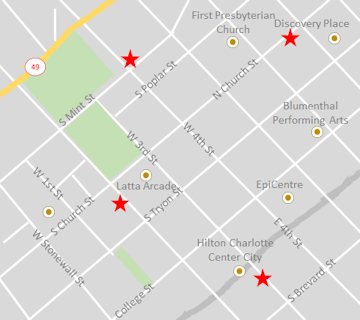

Today's Locations 11 a.m. to 2 p.m. 205 West 3rd Street, Charlotte, NC 2 p.m. to 4 p.m. 443 West 2nd Street, Charlotte, NC 4 p.m. to 8 p.m. 900 South Mint Street, Charlotte, NC 8 p.m. to 11 p.m. 168 North Church Street, Charlotte, NC